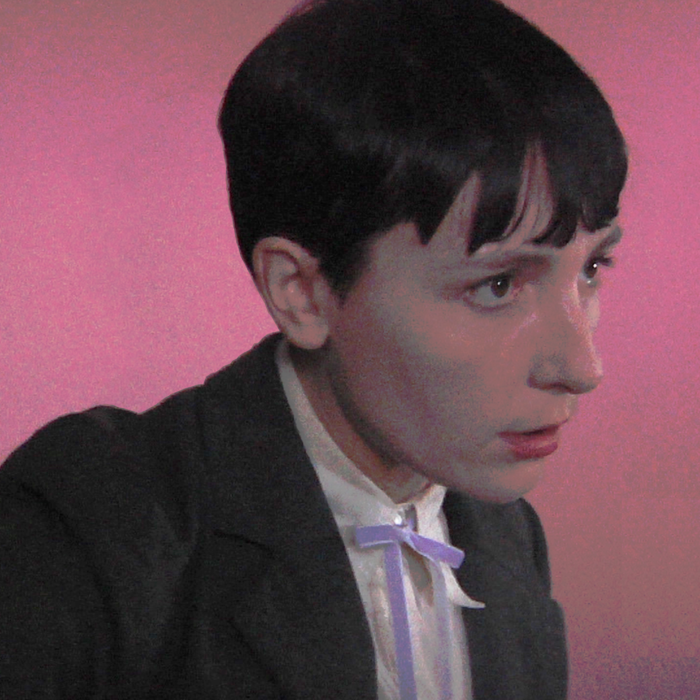
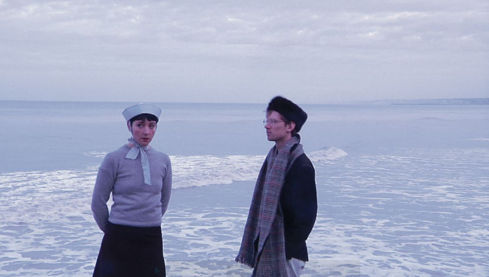

Flora Hibberd
Swirl
A thing of beauty, the music of Flora Hibberd... Whatever she’s put out thus far is absolutely perfect.
Cerys Matthews, BBC 6MusicIt doesn’t get any better than this, haunting, beautiful and timeless... I can’t wait to hear more.
Folk Radio UKA spectacular newcomer.
Beehive CandyOne of the foremost faces of a rising movement in contemporary folk music.
For Folks Sake

